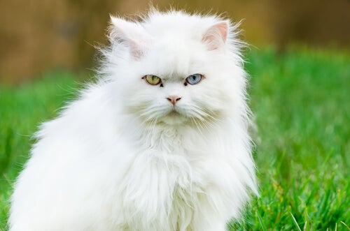
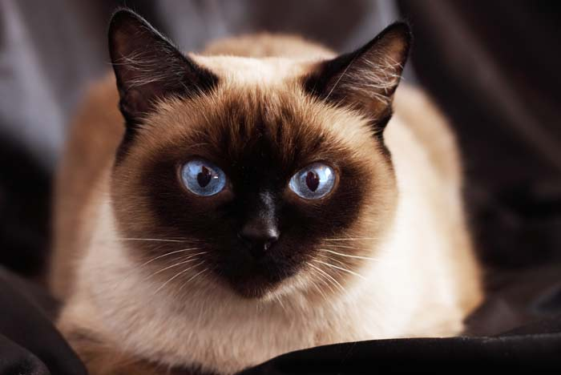

Ashera:uno de los mas apreciados y costosos
Angora:uno de los mas peluditos
El siamés es una raza de gato. Dentro de dicha raza se distinguen dos variedades: por un lado el siamés moderno, y por otro el siamés tradicional o Thai.
El siamés moderno es una raza de gato proveniente del antiguo reino de Siam, actualmente Tailandia. En 1882 fueron llevados a Inglaterra y en 1890 a Estados Unidos.
| Gatos | Dueños |
|---|---|
| angora | Juan | ashera | Daniela |
| bengala | Mario |
| persa | Anamilia |
| siamés | Alfonso |
| ragdoll | Patricia |
| sphynx | Luisa |
| Maine | Paulo |
| siberiano | Silvano |
| savannah | Joan |